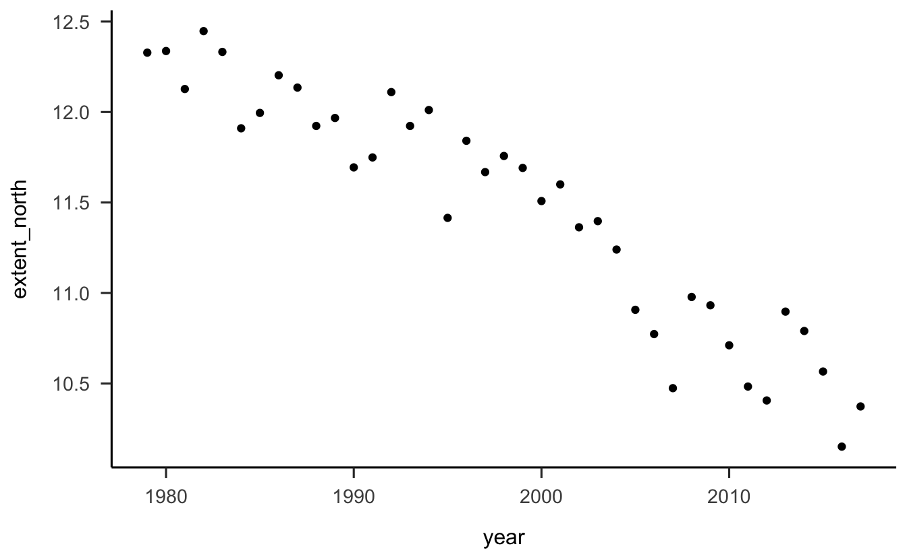

Capitolo 1 Introduzione alla regressione lineare
In questo capitolo verrà presentata un’introduzione “pratica” all’analisi della regressione, nella quale ci preoccuperemo di capire a cosa serve a come si interpretano i risultati che tale metodo statistico produce. Nel capitolo successivo, gli stessi argomenti verranno trattati in un modo più “formale” e con maggiori approfondimenti teorici. Questo capitolo contiene tutto quello che c’è da sapere e non si può non sapere su questo argomento. L’ho pensato per i miei laureandi, ovvero per degli studenti che devono usare queste procedure statistiche per risolvere un problema pratico (quello di concludere la tesi). L’altro capitolo è più convenzionalmente “didattico” ed è stato pensato in primo luogo per chi deve dare l’esame di Psicometria. Questo primo capitolo su questo tema può essere dunque pensato come un’introduzione “gentile” a ciò che verrà discusso nel prossimo capitolo.
1.1 Regressione bivariata
La regressione bivariata si pone il problema di descrivere la relazione statistica lineare che intercorre tra due variabili, \(x\) e \(y\). Per relazione “statistica” intendo dire che, nel caso dei dati campionari \(\{x, y\}\) di cui si occupa il modello di regressione, non c’è mai una “perfetta” relazione lineare (ovvero, i punti del diagramma a dispersione di \(\{x, y\}\) non si situano su una retta). In alcuni casi, quando guardiamo il diagramma a dispersione di \(\{x, y\}\) ci rendiamo conto che, in effetti, i punti \(\{x, y\}\), anche se non si dispongono su una retta, sono sparpagliati attorno ad una retta “virtuale” che passa attraverso la nube di punti. In una tale situazione (che è una delle tante possibili, non l’unica), è ragionevole descrivere la relazione tra le variabili \(x\) e \(y\) mediante la retta che, al meglio, approssima la nube di punti nel diagramma a disperiosne. L’analisi di regressione si pone il problema di trovare l’inclinazione di quella retta che passa il più vicino possibile ai punti del diagramma a dispersione di \(\{x, y\}\).
1.1.1 Scioglimento ghiaccio marino
Uno degli impatti più importanti dei cambiamenti climatici che stanno investendo il nostro Pianeta è la riduzione dell’estensione della calotta di ghiaccio marino artico. Esploriamo come l’estensione del ghiaccio marino artico sta cambiando nel tempo utilizzando un modello lineare. I dati sono forniti da The National Snow and Ice Data Center e sono espressi in milioni di chilometri quadrati.
I dati sono i seguenti:
data.frame(seaice)
#> year extent_north extent_south
#> 1 1979 12.328 11.700
#> 2 1980 12.337 11.230
#> 3 1981 12.127 11.435
#> 4 1982 12.447 11.640
#> 5 1983 12.332 11.389
#> 6 1984 11.910 11.454
#> 7 1985 11.995 11.618
#> 8 1986 12.203 11.088
#> 9 1987 12.135 11.554
#> 10 1988 11.923 12.131
#> 11 1989 11.967 11.426
#> 12 1990 11.694 11.410
#> 13 1991 11.749 11.545
#> 14 1992 12.110 11.399
#> 15 1993 11.923 11.420
#> 16 1994 12.011 11.774
#> 17 1995 11.415 11.795
#> 18 1996 11.841 11.769
#> 19 1997 11.668 11.390
#> 20 1998 11.757 11.738
#> 21 1999 11.691 11.761
#> 22 2000 11.508 11.747
#> 23 2001 11.600 11.673
#> 24 2002 11.363 11.222
#> 25 2003 11.397 11.969
#> 26 2004 11.240 11.961
#> 27 2005 10.907 11.695
#> 28 2006 10.773 11.461
#> 29 2007 10.474 11.687
#> 30 2008 10.978 12.239
#> 31 2009 10.932 12.049
#> 32 2010 10.711 12.107
#> 33 2011 10.483 11.501
#> 34 2012 10.406 12.004
#> 35 2013 10.897 12.524
#> 36 2014 10.790 12.776
#> 37 2015 10.566 12.414
#> 38 2016 10.151 11.156
#> 39 2017 10.373 10.693Quale domanda di ricerca possiamo porci con questi dati? Propongo la seguente domanda.
Domanda di ricerca: l’estensione del ghiaccio marino artico sta diminuendo nel tempo?
Per esplorare la risposta a questa domanda, iniziamo a creare una rappresentazione grafica dei dati. Dato che abbiamo due variabi continue (il tempo, espresso in anni, e l’estensione del ghiaccio marino artico, in milioni di chilometri quadrati), questi dati possono essere rappresentati graficamente mediante un diagramma a dispersione. Vogliamo sapere come varia l’estensione del ghiaccio marino artico in funzione del tempo e quindi disegnamo i dati ponendo la variabile tempo sull’asse delle ascisse e l’estensione del ghiaccio marino artico sull’asse delle ordinate.
seaice %>%
ggplot(aes(year, extent_north)) +
geom_point() Guardando la figura vediamo che è ragionevole descrivere la relazione tra l’estensione del ghiaccio marino artico (chiamiamolo \(y\)) e il tempo (chiamiamolo \(x\)) mediante una retta. Aggiungiamo dunque una retta al diagramma a dispersione, scegliendola in modo tale che si avvicini il più possibile ai punti del diagramma a dispersione. Ovviamente, è possibile scegliere tra infinite rette diverse. La retta che è rappresentata qui è stata scelta in base ad un criterio particolare, detto “dei minimi quadrati.” Vedremo meglio in seguito cosa questo significa. Per ora ci accontentiamo di riconoscere che la nostra è una buona scelta, per gli scopi presenti.
seaice %>%
ggplot(aes(year, extent_north)) +
geom_point() +
geom_smooth(method = "lm", se = FALSE)
#> `geom_smooth()` using formula 'y ~ x'1.2 Interpretazione dei coefficienti \(a\) e \(b\)
La retta che abbiamo disegnato nella figura precedente rappresenta la risposta alla nostra domanda di ricerca: l’estensione del ghiaccio marino artico sta diminuendo nel tempo.
Anziché considerare questa risposta unicamente dal punto di vista grafico, proviamo a descrivere la retta disegnata nella figura in maniera quantitativa, con dei numeri. Per fare questo, dobbiamo innanzitutto ricordare qual è l’equazione di una retta:
\[\begin{equation} y = a + b \times x \end{equation}\]
Prima di calcolare i coefficienti \(a\) e \(b\) della retta di regressione, rimaneggiamo i nostri dati. In particolare, rinominiamo le variabili e indicizziamo gli anni da 1 a 39. Nel caso presente, vogliamo sapere se l’estensione del ghiaccio marino artico dall’inizio alla fine del periodo temporale considerato, indipendentemente dal fatto che l’anno iniziale sia il 1979 e l’anno finale il 2017. Quindi sottraiamo 1979 dalle modalità della variabile year in modo tale che il primo punto temporale corrisponda a zero.
seaice <- seaice %>%
mutate(
x = year - 1979
) %>%
rename(
y = extent_north
)
glimpse(seaice)
#> Rows: 39
#> Columns: 4
#> $ year <int> 1979, 1980, 1981, 1982, 1983, 1984, 1985, 1986, 1987, 19…
#> $ y <dbl> 12.328, 12.337, 12.127, 12.447, 12.332, 11.910, 11.995, …
#> $ extent_south <dbl> 11.700, 11.230, 11.435, 11.640, 11.389, 11.454, 11.618, …
#> $ x <dbl> 0, 1, 2, 3, 4, 5, 6, 7, 8, 9, 10, 11, 12, 13, 14, 15, 16…Il diagramma a dispersione avrà ora la forma seguente:
seaice %>%
ggplot(aes(x, y)) +
geom_point() +
geom_smooth(method = "lm", se = FALSE)
#> `geom_smooth()` using formula 'y ~ x'Per trovare i coefficienti \(a\) e \(b\) della retta di regressione possiamo usare, ad esempio, la funzione lm():
L’output della funzione lm() ci dice che a è uguale a 12.501 e che b è uguale a -0.055. Ma che significato (geometrico) hanno questi valori? Ai coefficienti \(a\) e \(b\) possiamo assegnare la seguente interpretazione:
il coefficiente \(a\) rappresenta il valore della coordinata \(y\) (l’estensione del ghiaccio marino artico) della retta di regressione quando la coordinata \(x\) vale zero (nel nostro caso, l’anno 1979) – in altre parole, corrisponde al punto dove la retta di regressione interseca l’asse \(y\) del sistema di assi cartesiani;
il coefficiente \(b\) ci dice di quanto aumenta la coordinata \(y\) della retta di regressione, quando \(x\) aumenta di un’unità.
Quindi, \(a\) = 12.501 significa che, nel 1979, l’estensione del ghiaccio marino artico era pari a 12.501 milioni di chilometri quadrati.
Nel nostro caso, il segno di \(b\) è negativo; questo significa che l’estensione del ghiaccio marino artico sta diminuendo nel tempo. Il valore -0.055 ci dice che, per ogni anno che passa (nel periodo considerato dal 1979 al 2017), l’estensione del ghiaccio marino artico è diminuita, in media, di -0.055 milioni di chilometri quadrati.
Se guardiamo la figura, infatti, vediamo che, se ci sposiamo da \(x = 10\) a \(x = 20\) (ovvero, di dieci unità), la coordinata \(y\) della retta diminuisce di 10 volte \(b\), ovvero di -0.55 milioni di chilometri quadrati. Questo è indicato nella figura qui sotto.
dplot <- data.frame(
x1 = 10,
x2 = 20,
y1 = 12.50131410 + -0.05457389 * 10,
y2 = 12.50131410 + -0.05457389 * 20
)
seaice %>%
ggplot(aes(x, y)) +
geom_point(color="gray") +
geom_smooth(method = "lm", se = FALSE) +
geom_segment(aes(x = x2, y = y1, xend = x2, yend = y2),
arrow=arrow(), size=1.1, data = dplot) +
geom_segment(aes(x = x1, y = y1, xend = x2, yend = y1),
arrow=arrow(), size=1.1, data = dplot) +
annotate("text", x = 24.0, y = 11.75, label = "b = -0.55") +
annotate("text", x = 15, y = 12.15, label = "delta x = 10.0")
#> `geom_smooth()` using formula 'y ~ x'1.3 Scomposizione della \(y\)
Uno degli aspetti importanti della regressione lineare è che, in pratica, la retta di regressione scompone ciascun punteggio \(y\) in due componenti:
\[\begin{equation} y = (a + b \times x) + e \end{equation}\]
laddove \(\hat{y} = a + b \times x\) è la componente di \(y\) che è linearmente predicibile conoscendo \(x\), mentre la componente residua, \(e\), è la componente di \(y\) che non è linearmente predicibile conoscendo \(x\).
Nei nostri dati, questi significa quanto segue. Esaminiamo le prime 5 osservazioni del nostro campione:
seaice %>%
dplyr::select(x, y) %>%
top_n(5)
#> Selecting by y
#> x y
#> 1 0 12.328
#> 2 1 12.337
#> 3 3 12.447
#> 4 4 12.332
#> 5 7 12.203Aggiungo al data.frame una colonna che rappresenta i valori \(y\) predetti dal modello lineare (ovvero, \(\hat{y} = a + b \times x\): le coordinate \(y\) della retta di regressione per ciascuna delle osservazioni):
seaice$yhat <- coef(fm)[1] + coef(fm)[2] * seaice$x
seaice %>%
dplyr::select(x, y, yhat) %>%
top_n(5)
#> Selecting by yhat
#> x y yhat
#> 1 0 12.328 12.50131
#> 2 1 12.337 12.44674
#> 3 2 12.127 12.39217
#> 4 3 12.447 12.33759
#> 5 4 12.332 12.28302Aggiungo ora al data.frame i residui del modello di regressione. I residui sono definiti come
\[\begin{equation} e = y - (a + b \times x) = y - \hat{y} \end{equation}\]
ovvero
seaice$e <- seaice$y - (coef(fm)[1] + coef(fm)[2] * seaice$x)
seaice %>%
dplyr::select(x, y, yhat, e) %>%
top_n(5)
#> Selecting by e
#> x y yhat e
#> 1 13 12.110 11.79185 0.3181464
#> 2 15 12.011 11.68271 0.3282942
#> 3 19 11.757 11.46441 0.2925897
#> 4 20 11.691 11.40984 0.2811636
#> 5 22 11.600 11.30069 0.2993114Ciò che volevamo dimostrare è che la somma di \(\hat{y}\) e dei residui è uguale alla \(y\). Infatti:
seaice$sum <- seaice$yhat + seaice$e
seaice %>%
dplyr::select(x, y, yhat, e, sum) %>%
top_n(5)
#> Selecting by sum
#> x y yhat e sum
#> 1 0 12.328 12.50131 -0.17331410 12.328
#> 2 1 12.337 12.44674 -0.10974022 12.337
#> 3 3 12.447 12.33759 0.10940756 12.447
#> 4 4 12.332 12.28302 0.04898144 12.332
#> 5 7 12.203 12.11930 0.08370310 12.203In altre parole, il modello di regressone scompone la \(y\) in due componenti: la porzione della \(y\) che possiamo prevedere conoscendo \(x\) (ovvero, \(\hat{y} = a + b \times x\)) e la porzione della \(y\) che non possiamo prevedere sulla base di \(x\).
1.3.1 Metodo di stima dei coefficienti del modello di regressione
Come abbiamo fatto a calcolare i coefficienti dei minimi quadrati \(a\) e \(b\)? Ci sono tanti metodi; il più comune si chiama “metodo dei minimi quadrati.” Lo esamineremo in seguito. Per i nostri scopi, è poco importante: per ora ci accontentiamo di chiedere ad R di fare i calcoli per noi.
1.4 Inferenza sul modello di regressione
Finora siamo riusciti a descrivere la relazione statistica tra \(x\) e \(y\) in un campione di osservazioni. Siamo ben consapevoli che, in un altro campione di osservazioni, la relazione statistica tra \(x\) e \(y\) non sarà identica a quella osservata nel caso del primo campione – dato che i dati saranno diversi. La domanda cruciale dunque diventa la seguente: quanto sono simili i coefficienti dei minimi quadrati calcolati sui dati campionari ai coefficienti di un’ipotetica retta di regressione che, sempre mediante il metodo dei minimi quadrati, descriverebbe la relazione tra tutte le osservazioni \(\{x, y\}\) nella popolazione? Ciò che vogliamo è dunque una quantificazione della nostra incertezza: vogliamo sapere quanto dobbiamo fidarci delle stime campionarie come descrizioni dei valori (sconosciuti) della popolazione. Ci sono due possibilità.
Se le stime di \(a\) e \(b\) fornite dal particolare campione che abbiamo osservato sono simili ai valori teorici della popolazione, allora i dati del campione ci forniscono informazioni utili per capire quali sono le proprietà della popolazione.
Se invece le stime campionarie di \(a\) e \(b\) sono molto diverse dai valori teorici della popolazione, allora i dati del campione non ci aiutano a capire quali sono le proprietà della popolazione.
Il problema che abbiamo è quello di decidere in quale di queste due situazioni ci troviamo: la prima o la seconda. Questo è il problema dell’inferenza statistica sul modello di regressione.
Il problema dell’inferenza viene affrontato utilizzando gli strumenti della teoria della probabilità per costruire un intervallo di valori. Nell’approccio Bayesiano, tale intervallo di valori si chiama intervallo di credibilità. Se calcoliamo, ad esempio, l’intervallo di credibilità all’89% per il parametro \(\beta\) (inclinazione della retta di regressione nella popolazione), interpretiamo tale intervallo di valori nel modo seguente: possiamo dire che “siamo sicuri all’89% che il vero valore di \(\beta\) è contenuto nell’intervallo stimato” – laddove per “vero valore di \(\beta\)” intendiamo il valore del parametro sconosciuto della popolazione. Se calcoliamo l’intervallo di credibilità, ad un dato livello di certezza, possiamo giungere a una di tre possibili conclusioni.
- L’intervallo di credibilità non include lo 0 e il suo limite inferiore è positivo: possiamo concludere, con una certezza dell’89%, che c’è una relazione positiva tra \(x\) e \(y\) nella popolazione;
- l’intervallo di credibilità non include lo 0 e il suo limite superiore è negativo: possiamo concludere, con una certezza del’89%, che c’è una relazione negativa tra \(x\) e \(y\) nella popolazione;
- l’intervallo di credibilità include lo 0: con un un livello di certezza dell’89%, non possiamo negare la possibilità che nella popolazione la relazione tra \(x\) e \(y\) sia nulla – ovvero, non abbiamo sufficienti informazioni per sapere se è positiva o negativa.
Ritorniamo ora ai nostri dati e calcoliamo, con un metodo che discuteremo in seguito, l’intervallo di credibilità all’89%. Per ora non ci preoccupiamo della sintassi dei comandi R, né di cosa significano tali istruzioni. Ci preoccupiamo solo di ottenere le stime dei coefficienti della retta di regressione e gli intervalli di credibilità:
flist <- alist(
y ~ dnorm(mu, sigma),
mu <- a + b*x,
c(a, b) ~ dnorm(0, 2),
sigma ~ dcauchy(0, 2)
)
fit <- quap(
flist,
data = list(y=seaice$y, x=seaice$x),
start = list(a=0, b=0, sigma=0.1)
)
round(precis(fit), 3)
#> mean sd 5.5% 94.5%
#> a 12.487 0.068 12.379 12.595
#> b -0.054 0.003 -0.059 -0.049
#> sigma 0.215 0.024 0.176 0.254L’intervallo di credibilità per \(b\) così ottenuto, ovvero [-0.059, -0.049], non include lo zero. Possiamo dunque concludere, con un livello di certezza dell’89%, che nella popolazione c’è una relazione negativa tra \(x\) e \(y\). In altre parole, siamo certi, con un livello di certezza dell’89%, che dal 1979 al 2017 l’estensione del ghiaccio marino artico è diminuita.
Se vogliamo, possiamo anche ottenere una stima di \(b\) che corrisponde ad un livello di certezza più alto, il che porterà ad un aumento dell’ampiezza dell’interallo di credibilità. Stimiamo dunque l’interallo di credibilità ad un livello di certezza del 99%:
round(precis(fit, prob=0.99), 3)
#> mean sd 0.5% 99.5%
#> a 12.487 0.068 12.313 12.661
#> b -0.054 0.003 -0.062 -0.046
#> sigma 0.215 0.024 0.152 0.277Anche in questo caso l’interallo di credibilità non include lo zero per cui, anche se pretendiamo un livello di certazza del 99%, confermiamo la conclusione secondo la quale dal 1979 al 2017 l’estensione del ghiaccio marino artico è diminuita.
Per quel che riguarda \(a\), con un livello di certezza dell’99% possiamo dire che il valore dell’intercetta della retta di regressione nella popolazione è incluso nell’intervallo [12.379, 12.595]. Nel caso presente, ciò ha una semplice interpretazione: significa che la nostra stima dell’esensione del ghiaccio marino artico nell’anno 1979 corrisponde a un valore compreso tra [12.379, 12.595], con un livello di certezza del 99%.
1.4.1 Errore standard della stima
Il parametto sigma nell’output di precis() ci fornisce un altro utile pezzo di informazione: stima quanto sono distanti, in media, le osservazioni dalla retta di regressione nella popolazione. Il valore stimato di sigma, chiamato errore standard della stima, è pari a 0.215, il che significa che il modello di regressione, nel stimare la relazione tra \(y\) e \(x\) compie un errore medio di 0.215 milioni di chilometri quadrati – questa è la stima della distanza media tra ciascuno dei punti del diagramma a dispersione e la retta di regressione nella popolazione.
1.5 Una variabile indipendente qualitativa
Il modello statistico della regressione bivariato che abbiamo descritto sopra è molto limitato: può solo descrivere la relazione lineare tra due variabili continue. Estendiamolo ora al caso in cui, oltre ad includere un predittore continuo \(x\), il modello di regressione comprende anche una variabile che consente di suddividere le osservazioni del campione in due gruppi.
Per semplicità, simuliamo un insieme di dati che utilizzeremo nella seguente discussione.
set.seed(1234)
n <- 100
x1 <- rnorm(n, 4, 1)
y1 <- 5 + 5 * x1 + rnorm(n, 0, 2)
x2 <- rnorm(n, 4, 1)
y2 <- -3 + 2 * x2 + rnorm(n, 0, 2)
y <- c(y1, y2)
x <- c(x1, x2)
group <- rep(c("gr1", "gr2"), each = n)
d <- data.frame(x, y, group)
head(d)
#> x y group
#> 1 2.792934 19.79372 gr1
#> 2 4.277429 25.43771 gr1
#> 3 5.084441 30.55419 gr1
#> 4 1.654302 12.26656 gr1
#> 5 4.429125 25.49363 gr1
#> 6 4.506056 27.86426 gr1Esaminiamo il diagramma a dispersione che indica chiaramente che ci sono due gruppi distinti di osservazioni:
d %>%
ggplot(aes(x, y)) +
geom_point(aes(color = group))È ovvio, che nel caso presente, non è sufficiente un modello di regressione che ignora il fatto che i dati appartengono a due gruppi diversi. Infatti, se adattiamo ai dati un’unica retta di regressione, è facile rendersi conto che tale retta si situerà in una posizione molto distante dai dati.
d %>%
ggplot(aes(x, y)) +
geom_point(aes(color = group)) +
geom_smooth(method = "lm", se = FALSE)
#> `geom_smooth()` using formula 'y ~ x'Per questi dati è ovviamente più sensato adattare una diversa retta di regressione a ciascun gruppo di osservazioni:
d %>%
ggplot(aes(x, y, color = group)) +
geom_point(aes(color = group)) +
geom_smooth(method = "lm", se = FALSE)
#> `geom_smooth()` using formula 'y ~ x'Come possiamo modificare il modello di regressione che abbiamo esaminato in precedenza in modo tale da essere in grado di stimare i coefficienti di regressione delle due rette rappresentate nella figura precedente? Questo problema si risolve nel modo seguente. Crediamo una variabile, chiamata dummy, che ha valore 0 per un gruppo, diciamo gr1, e valore 1 per l’altro gruppo:
d$gr <- ifelse(d$group == "gr1", 0, 1)
head(d)
#> x y group gr
#> 1 2.792934 19.79372 gr1 0
#> 2 4.277429 25.43771 gr1 0
#> 3 5.084441 30.55419 gr1 0
#> 4 1.654302 12.26656 gr1 0
#> 5 4.429125 25.49363 gr1 0
#> 6 4.506056 27.86426 gr1 0
tail(d)
#> x y group gr
#> 195 5.656043 9.369576 gr2 1
#> 196 5.809805 10.198400 gr2 1
#> 197 2.824963 3.564125 gr2 1
#> 198 3.633297 5.344260 gr2 1
#> 199 4.353625 5.736537 gr2 1
#> 200 4.319156 3.805334 gr2 1Esaminiamo ora il modello di regressione che include tale variabile dummy, che chiameremo D:
\[\begin{equation} y = \alpha + \beta x + \gamma D + \varepsilon. \end{equation}\]
Quando \(D = 0\):
\[\begin{align} y &= \alpha + \beta x + \gamma D + \varepsilon,\notag\\ &= \alpha + \beta x + \gamma \times 0 + \varepsilon,\notag\\ &= \alpha + \beta x + \varepsilon.\notag \end{align}\]
Quando \(D = 1\):
\[\begin{align} y &= \alpha + \beta x + \gamma D + \varepsilon,\notag\\ &= \alpha + \beta x + \gamma \times 1 + \varepsilon,\notag\\ &= (\alpha + \gamma) + \beta x + \varepsilon.\notag \end{align}\]
Quindi, se assumiamo che le due rette di regressione siano parallele (nella discussione precedente abbiamo previsto un unico valore \(\beta\)), i coefficienti del modello avranno la seguente interpretazione:
- \(\alpha\) = intercetta della retta di regressione per il gruppo codificato con D = 0;
- \(\beta\) = pendenza della retta di regressione per il gruppo codificato con D = 0;
- \(\gamma\) = differenza tra l’intercetta della retta di regressione per il gruppo codificato con D = 1 e l’intercetta della retta di regressione per il gruppo codificato con D = 0.
1.5.1 Interazione
In generale, però, le due rette di regressione non sono parallele. Per potere rappresentare una tale possibilità, introduciamo nel data.frame d una seconda variabile e la chiamiamo DX. Creaimo DX facendo il prodotto delle variabili D e x:
d$DX <- d$gr * d$x
head(d)
#> x y group gr DX
#> 1 2.792934 19.79372 gr1 0 0
#> 2 4.277429 25.43771 gr1 0 0
#> 3 5.084441 30.55419 gr1 0 0
#> 4 1.654302 12.26656 gr1 0 0
#> 5 4.429125 25.49363 gr1 0 0
#> 6 4.506056 27.86426 gr1 0 0
tail(d)
#> x y group gr DX
#> 195 5.656043 9.369576 gr2 1 5.656043
#> 196 5.809805 10.198400 gr2 1 5.809805
#> 197 2.824963 3.564125 gr2 1 2.824963
#> 198 3.633297 5.344260 gr2 1 3.633297
#> 199 4.353625 5.736537 gr2 1 4.353625
#> 200 4.319156 3.805334 gr2 1 4.319156Si noti che, quando D = 0, allora DX = 0; quando D = 1, allora DX = x.
Riscriviamo il modello di regressione nel modo seguente:
\[\begin{equation} y = \alpha + \beta x + \gamma D + \zeta DX + \varepsilon. \end{equation}\]
In tali circostanze, quando \(D = 0\), abbiamo che:
\[\begin{align} y &= \alpha + \beta x + \gamma D + \zeta DX + \varepsilon,\notag\\ &= \alpha + \beta x + \gamma \times 0 + \zeta \times 0 + \varepsilon,\notag\\ &= \alpha + \beta x + \varepsilon.\notag \end{align}\]
Quando \(D = 1\) (ricordiamo: in questo caso \(DX = x\)):
\[\begin{align} y &= \alpha + \beta x + \gamma D + \zeta DX + \varepsilon,\notag\\ &= \alpha + \beta x + \gamma \times 1 + \zeta x + \varepsilon,\notag\\ &= (\alpha + \gamma) + (\beta + \zeta) x + \varepsilon.\notag \end{align}\]
Ciò significa che i coefficienti del modello di regressione avranno ora la seguente interpretazione:
- \(\alpha\) = intercetta della retta di regressione per il gruppo codificato con D = 0;
- \(\beta\) = pendenza della retta di regressione per il gruppo codificato con D = 0;
- \(\gamma\) = differenza tra l’intercetta della retta di regressione per il gruppo codificato con D = 1 e l’intercetta della retta di regressione per il gruppo codificato con D = 0;
- \(\zeta\) = differenza tra la pendenza della retta di regressione per il gruppo codificato con D = 1 e la pendenza della retta di regressione per il gruppo codificato con D = 0;
Ritorniamo al nostro esempio numerico e calcoliamo i coefficienti del modello di regressione utilizzando l’approccio Bayesiano:
flist1 <- alist(
y ~ dnorm(mu, sigma),
mu <- a + b*x + gamma*d + zeta*DX,
c(a, b, gamma, zeta) ~ dnorm(0, 10),
sigma ~ dnorm(0, 5)
)
fit1 <- quap(
flist1,
data = list(y=d$y, x=d$x, d=d$gr, DX=d$DX),
start = list(a=0, b=0, gamma=0, zeta=0, sigma=0.5)
)
precis(fit1)
#> mean sd 5.5% 94.5%
#> a 5.202783 0.8167093 3.897524 6.508043
#> b 4.967164 0.2057473 4.638340 5.295988
#> gamma -8.569902 1.2250868 -10.527828 -6.611977
#> zeta -2.881817 0.2970176 -3.356509 -2.407126
#> sigma 2.069882 0.1034130 1.904608 2.235155In un tale modello, la prima domanda che dobbiamo porci è se i dati giustificano la conclusione secondo la quale, nella popolazione, le due rette hanno una pendenza diversa. Per rispondere a tale domanda esaminiamo l’intervallo di credibilità del coefficiente associato al termine d’interazione, ovvero del coefficiente \(\zeta\). R ci dice che l’intervallo di credibilità all’89% per il coefficiente \(\zeta\) è pari a [-3.36, -2.41]. Dato che tale intervallo non include lo zero, con un livello di certezza dell’89% concludiamo che la retta di regressione del gruppo codificato con D = 1 (ovvero gr2) ha una pendenza minore della retta di regressione per il gruppo codificato con D = 0 (ovvero gr1).